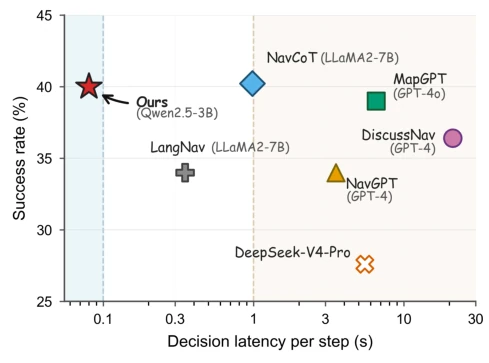
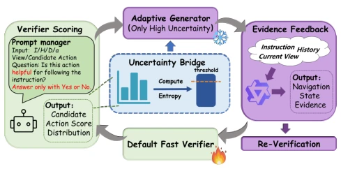
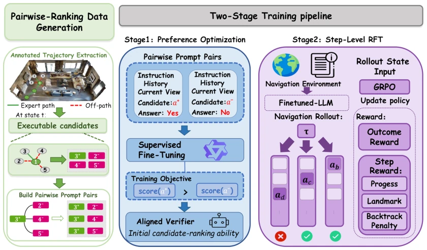

VerNav's operation is quite interesting, directly sealing the LLM's "mouth" and changing it to "mental calculation". Latency is cut by 10 times, indeed satisfying, but the cost is the original Verifier barely knows how to walk (SR 0.38%), entirely relying on the subsequent two-stage training to pull it back. Although the authors emphasize using the same backbone for comparison, Qwen2.5-3B fighting the GPT-4 baseline always gives a sense of "Guan Gong fighting Qin Qiong", fortunately the re-test data stands firm. The entropy trigger mechanism is a smart move, only calling for help when lost, but has the extra judgment cost during inference been accounted for? In short, this is a pragmatic scheme walking a tightrope between "fast" and "accurate", suitable for latency-sensitive scenarios, but generalization still depends on subsequent verification. However, compressing complex CoT into Yes/No verification, although fast, might lose too much semantic information? After all, navigation is not guessing riddles; sometimes explaining a bit more might be more important than guessing correctly directly. This paper can be considered a strong remedy for the "chronic disease" of LLM navigation, with significant efficacy, but the side effects (training complexity) are also considerable.
研究动机Motivation
VLN 任务要求智能体根据自然语言指令在未知 3D 环境中导航 (Anderson et al. 2018)。现有基于 LLM 的方法（如 NavGPT, NavCoT）倾向于每一步都进行自回归生成，以组织路线进度和中间线索 (Pan et al. 2024; Lin et al. 2025)。然而，这种逐步骤生成积累了巨大的决策阶段延迟，且相邻步骤间生成的中间内容存在大量冗余。这导致了一个核心问题：如何在保持低延迟决策路径的同时，仅在需要额外语义线索时才调用昂贵的生成？现有方法未能有效解决延迟与性能之间的权衡，亟需一种更高效的决策接口。
VLN tasks require agents to navigate in unknown 3D environments based on natural language instructions (Anderson et al. 2018). Existing LLM-based methods (such as NavGPT, NavCoT) tend to perform autoregressive generation at each step to organize route progress and intermediate clues (Pan et al. 2024; Lin et al. 2025). However, this step-by-step generation accumulates huge decision-stage latency, and there is significant redundancy in the intermediate content generated between adjacent steps. This leads to a core problem: how to maintain a low-latency decision path while only calling expensive generation when additional semantic clues are needed? Existing methods fail to effectively solve the trade-off between latency and performance, urgently requiring a more efficient decision interface.

Figure 1: Decision-stage efficiency on R2R val-unseen. Latency–performance comparison for the verifier-only de- cision path of VerNav and representative LLM-based VLN methods. Latency denotes per-step LLM decision time un- der a unified measurement protocol, shown on a logarithmic scale.
VerNav's core is the "Verification-First" framework. First, action selection is no longer generating text, but batch verification of executable candidate actions (Verifier-First Action Interface). The Verifier scores through binary verification (Yes/No), query template P integrates instructions, history, view descriptions, and actions; all candidate actions share the context, differing only in actions, achieving parallel inference. Second, an Entropy-based Collaboration framework is introduced. Using the distribution of Verifier scores to calculate normalized candidate entropy; when entropy exceeds the threshold, an Adaptive Generator is triggered to provide compact state evidence, otherwise only the Verifier is used. Finally, two-stage alignment training is adopted. The static stage uses VPO (Verifier Preference Optimization), optimizing local preferences based on selected/rejected action pairs; the dynamic stage uses step-level reinforcement fine-tuning (RFT), combining episode-level advantages based on trajectory success and step-level rewards based on local progress. RFT rewards include distance reduction to target, new landmark discovery, and penalties for avoiding loops, thereby optimizing long-range navigation behavior and resolving conflicts between local preferences and global trajectories.
Tested on the R2R benchmark (val-seen/val-unseen). Baselines include NavGPT, DiscussNav, MapGPT, NavCoT, etc. Metrics cover SR, SPL, TL, NE. VerNav (Qwen2.5-3B) achieves an SR of 39.63% on val-unseen, comparable to strong baselines, but single-step latency is only 0.08s, 12.3 times faster than NavCoT, and over 30 times faster than MapGPT. Ablation studies show VPO improved SR from 0.38% to 37.25%, and RFT further raised it to 39.63%. Entropy trigger analysis indicates that failure trajectories have higher entropy, generator calls are more frequent, and evidence enhancement can significantly reduce entropy and improve SR. Re-testing with the same backbone verified that the latency advantage is not due to model size. Additionally, although RFT improves SR, SPL drops slightly, indicating a trade-off between goal orientation and path efficiency.
其他图片Other Figures

Figure 4: Overview of generator–verifier collaboration. The diagram illustrates the inference flow among the verifier, uncertainty bridge, and adaptive generator in the entropy- triggered collaboration path.

Figure 5: Overview of the two-stage verifier training procedure. The verifier is first trained with VPO and then refined with reinforcement fine-tuning on policy-induced rollouts.